创建Qml项目
一、新建项目
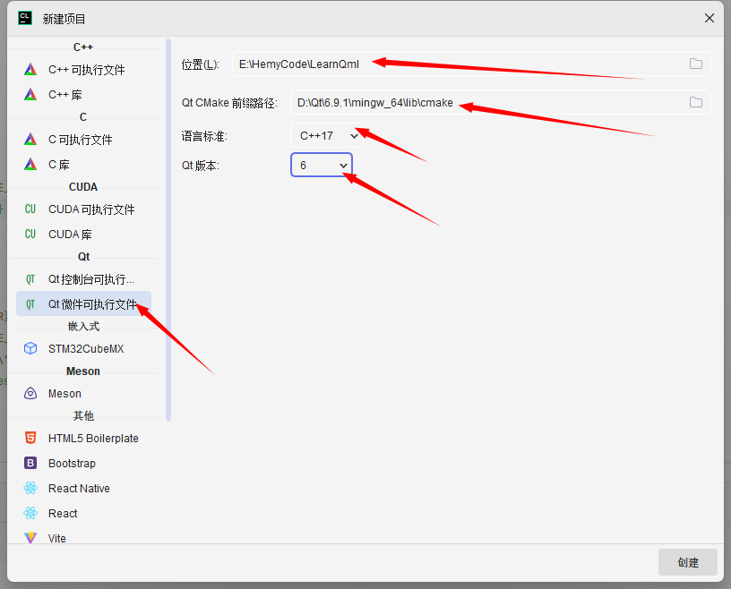
选择Qt微件可执行程序（Qt Widgets Application），Qt CMake前缀路径选择Qt安装目录下lib/cmake目录。
C++版本这里选择的是C++17
Qt版本选择的是Qt6
创建完毕之后会生成一个项目，项目本身是可以直接编译运行的。
从CMake配置中可以看到，这里使用的是Clion绑定的MinGw，各个Clion版本的不一样。这里建议用Qt版本匹配的MinGw
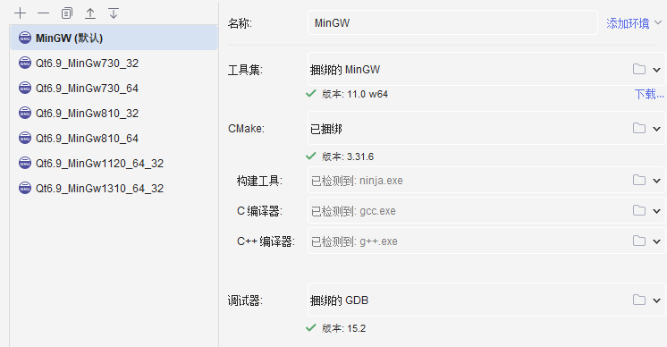
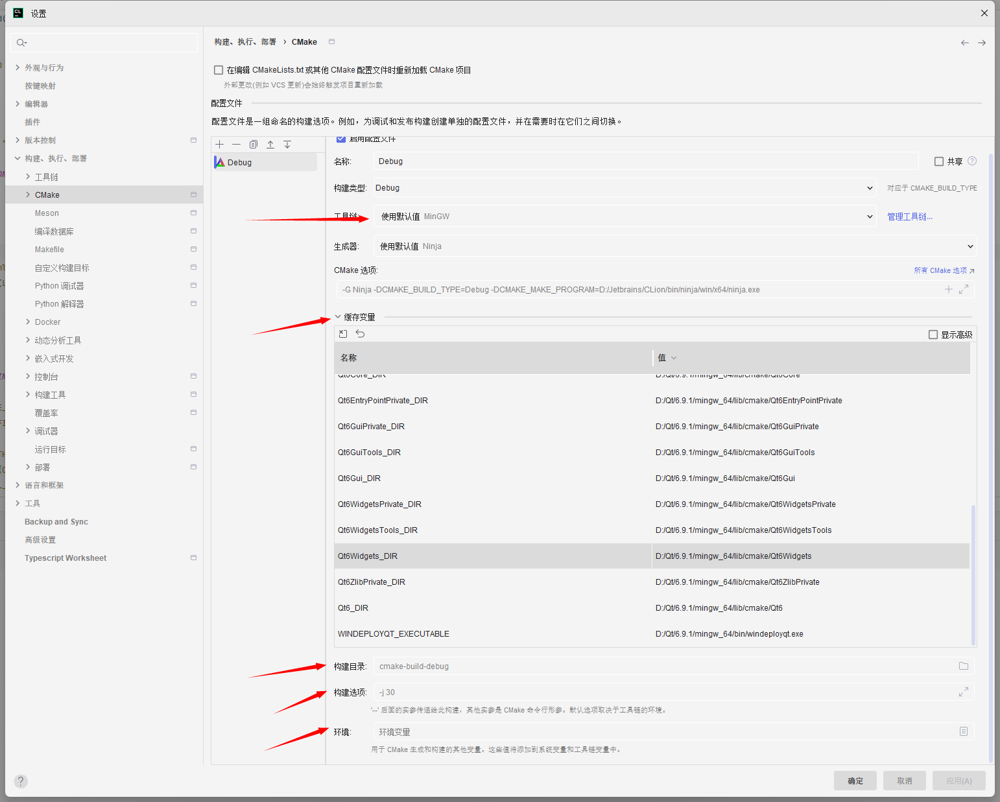
缓存变量是IDE自动生成的，我们一般不需要进行修改
二、更改为Qt匹配的MinGw
2.1 查看Qt绑定的MinGw版本
这个是最正确的方法
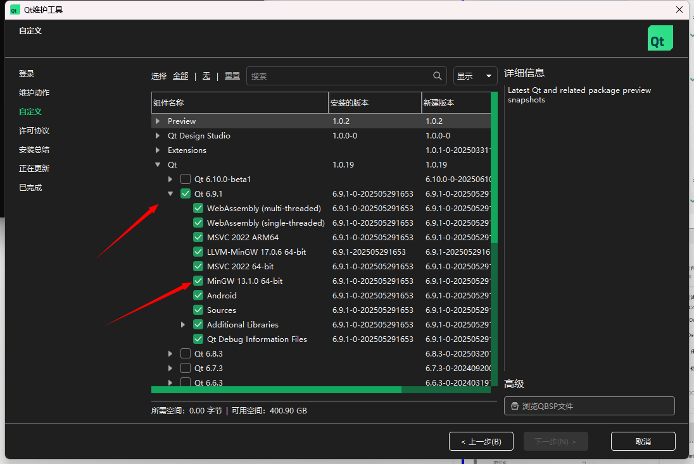
有的文档可能写着在安装目录bin下执行g++ --version查看，实际上这个是不准确的。这个命令运行的g++版本是我们在系统的环境变量里面设置的第一个g++.exe的版本，而不是Qt匹配MinGw\bin中的g++.exe，如：
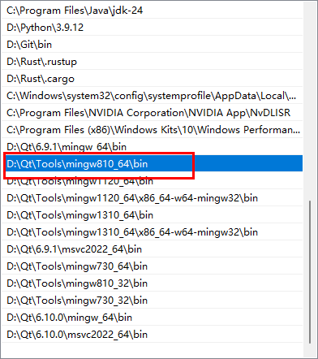
我当前的环境，第一个有g++.exe的路径是D:\Qt\Tools\mingw810_64\bin， 所以在cmd窗口执行 g++ --version 时，实际上是执行的D:\Qt\Tools\mingw810_64\bin\g++.exe --version
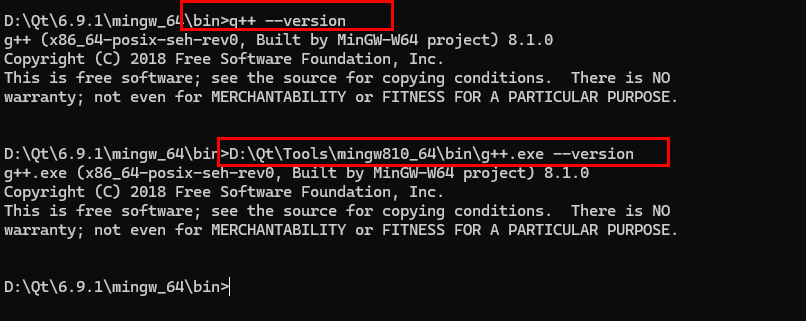
2.2 更改匹配MinGw
当前Qt 6.9.1版本匹配的MinGw是13.1版本，配置好MinGw 13.1.0 64 bit的工具链信息
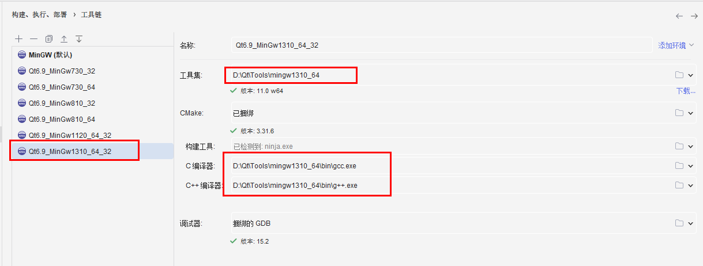
在CMake配置中选择刚才添加/配置的MinGw工具链
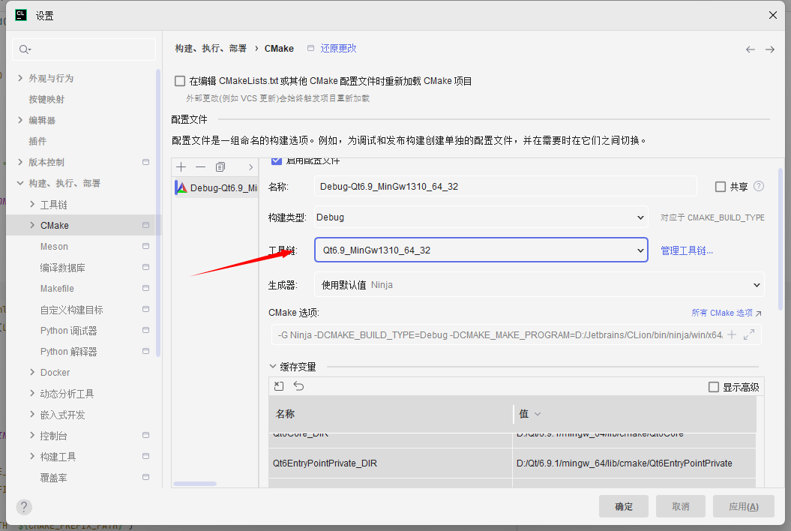
工具链配置完毕后，会在源码目录生成一个对应的cmake-build目录
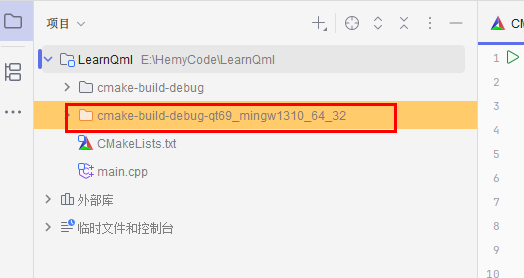
2.3 运行查看效果
默认的main.cpp如下：
| C++ |
|---|
| #include <QApplication>
#include <QPushButton>
int main(int argc, char* argv[])
{
QApplication a(argc, argv);
QPushButton button("Hello world!", nullptr);
button.resize(200, 100);
button.show();
return QApplication::exec();
}
|
这里是用QApplication创建了一个窗口，窗口中创建了一个200*100的按钮，按钮显示的文字是“Hello world!”
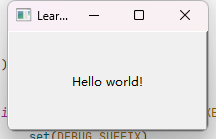
这里因为开始创建的是QWidgets的应用，所以用的都是QWidgets的接口。后面我们再介绍怎么修改为Qml的窗口。
三、配置Qml
3.1 创建目录
创建一个res或者resources目录，存放qml文件和qrc文件
创建一个src目录存放源文件
3.2 创建qml文件
在res目录中新建qml和qrc文件，也可以再自行创建子目录，比如model1、model2、qml等
HelloQml.qml
| QML |
|---|
| import QtQuick 2.15
import QtQuick.Window 2.15
Window {
width: 400
height: 300
visible: true
title: "CLion QML Demo"
Rectangle {
anchors.centerIn: parent
width: 200
height: 100
color: "lightblue"
radius: 10
Text {
anchors.centerIn: parent
text: "Hello QML!"
font.pixelSize: 24
}
}
}
|
resources.qrc
| XML |
|---|
| <RCC>
<qresource prefix="/">
<file>HelloQml.qml</file>
</qresource>
</RCC>
|
3.2 配置CMakeList.txt
qt6_add_resources
在CMakeList.txt中，add_executable前增加资源文件加载，并修改add_executable
| CMake |
|---|
| set(RESOURCES res/resources.qrc)
qt6_add_resources(RES_SOURCES ${RESOURCES})
# 添加可执行文件
add_executable(${PROJECT_NAME}
main.cpp
# 后续可添加其他文件
${RESOURCES}
)
|
find_package
在find_package中增加qml，并且链接器增加qml
| CMake |
|---|
| # 查找Qt库（必须包含Core和Quick）
find_package(Qt6 COMPONENTS
Core
Quick
Gui
Widgets
Qml
REQUIRED)
|
target_link_libraries增加Qml，可以用Qt::，也可以用Qt6::
| CMake |
|---|
| # 链接Qt库
target_link_libraries(LearnQml
Qt::Core
Qt::Gui
Qt::Quick
Qt::Widgets
Qt::Qml
)
|
3.3 后处理
| CMake |
|---|
| if (WIN32 AND NOT DEFINED CMAKE_TOOLCHAIN_FILE)
set(DEBUG_SUFFIX)
if (MSVC AND CMAKE_BUILD_TYPE MATCHES "Debug")
set(DEBUG_SUFFIX "d")
endif ()
set(QT_INSTALL_PATH "${CMAKE_PREFIX_PATH}")
if (NOT EXISTS "${QT_INSTALL_PATH}/bin")
set(QT_INSTALL_PATH "${QT_INSTALL_PATH}/..")
if (NOT EXISTS "${QT_INSTALL_PATH}/bin")
set(QT_INSTALL_PATH "${QT_INSTALL_PATH}/..")
endif ()
endif ()
if (EXISTS "${QT_INSTALL_PATH}/plugins/platforms/qwindows${DEBUG_SUFFIX}.dll")
add_custom_command(TARGET ${PROJECT_NAME} POST_BUILD
COMMAND ${CMAKE_COMMAND} -E make_directory
"$<TARGET_FILE_DIR:${PROJECT_NAME}>/plugins/platforms/")
add_custom_command(TARGET ${PROJECT_NAME} POST_BUILD
COMMAND ${CMAKE_COMMAND} -E copy
"${QT_INSTALL_PATH}/plugins/platforms/qwindows${DEBUG_SUFFIX}.dll"
"$<TARGET_FILE_DIR:${PROJECT_NAME}>/plugins/platforms/")
endif ()
foreach (QT_LIB Core Gui Widgets Quick Qml)
add_custom_command(TARGET ${PROJECT_NAME} POST_BUILD
COMMAND ${CMAKE_COMMAND} -E copy
"${QT_INSTALL_PATH}/bin/Qt6${QT_LIB}${DEBUG_SUFFIX}.dll"
"$<TARGET_FILE_DIR:${PROJECT_NAME}>")
endforeach (QT_LIB)
endif ()
|
这部分是默认生成的。
第一部分是设置dll文件后缀，默认是没有后缀，如果是MSVC 并且Debug场景，后缀被设置为d，即dll文件都是xxxxd.dll、Qt6xxxxd.dll、Libxxxd.dll等
第二部分，是找到QT_INSTALL_PATH这个值，因为后面要拷贝qwindows.dll或qwindowsd.dll，这个文件是在QT的安装路径下的.
第三部分是拷贝，将qwindows.dll或qwindowsd.dll拷贝到工程cmake-build-xxx目录下的/plugins/platforms/下。
foreach (QT_LIB Core Gui Widgets)这部分是遍历找到依赖的Qt6的dll文件，然后拷贝到cmake-build-xxx目录下，注意这里需要修改下，因为引入了新的dll库，这里需要进行添加，方便拷贝
3.4 后处理部署
在后处理中，还需要增加部署动作，否则工程是运行不了的。
| CMake |
|---|
| if (WIN32 AND NOT DEFINED CMAKE_TOOLCHAIN_FILE)
message("QT_INSTALL_PATH ${QT_INSTALL_PATH}")
# 查找windeployqt
find_program(WINDEPLOYQT_EXE windeployqt
PATHS "${QT_INSTALL_PATH}/bin"
DOC "Qt deployment tool"
REQUIRED
)
# 添加部署命令
message("CMAKE_CURRENT_SOURCE_DIR ${CMAKE_CURRENT_SOURCE_DIR}")
add_custom_command(TARGET ${PROJECT_NAME} POST_BUILD
COMMAND "${WINDEPLOYQT_EXE}"
--verbose 1
--no-compiler-runtime
--no-translations
--dir "$<TARGET_FILE_DIR:${PROJECT_NAME}>"
--qmldir "${CMAKE_CURRENT_SOURCE_DIR}/res"
"$<TARGET_FILE:${PROJECT_NAME}>"
COMMENT "Deploying Qt dependencies..."
)
# 复制QML文件到部署目录
file(GLOB QML_FILES "res/*.qml")
add_custom_command(TARGET ${PROJECT_NAME} POST_BUILD
COMMAND ${CMAKE_COMMAND} -E copy
${QML_FILES}
"${CMAKE_CURRENT_BINARY_DIR}"
COMMENT "Copying QML files..."
)
endif ()
|
先是找到windeployqt，然后用这个工具进行windows部署，这个是qt的工具，部署完毕后，需要的dll库就会生成到指定目录中。
最后是将qml文件拷贝到部署目录中
四、修改main.cpp
修改main.cpp，引入qml文件
4.1 修改前
| C++ |
|---|
| #include <QApplication>
#include <QPushButton>
int main(int argc, char* argv[])
{
QApplication a(argc, argv);
QPushButton button("Hello world!", nullptr);
button.resize(200, 100);
button.show();
return QApplication::exec();
}
|
4.2 修改后
| C++ |
|---|
| #include <QGuiApplication>
#include <QQmlApplicationEngine>
int main(int argc, char *argv[]) {
QGuiApplication app(argc, argv);
QQmlApplicationEngine engine;
// 加载QML文件（确保路径正确）
//engine.load(QUrl("qrc:/main.qml")); // 或使用绝对路径
// 改用绝对路径（调试用）
engine.load(QUrl::fromLocalFile("main.qml"));
if (engine.rootObjects().isEmpty())
return -1;
return app.exec();
}
|
去掉了QApplication，引用QGuiApplication和QQmlApplicationEngine，这个就是单纯的加载qml，如果你想做复杂一点，可以考虑通过QApplication来拉起Qml，这个我们后面再探讨。
4.3 运行效果
效果如下：
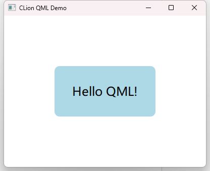
五、迁移输出文件
在CMakeList.txt中设置所有输出文件到deploy目录
将之前设置的QT_LIBS中所有的库转换成Qt6::的，然后运用在target_link_libraries中。
| CMake |
|---|
| foreach(lib ${QT_LIBS})
list(APPEND QT_LINK_LIBS "Qt6::${lib}")
endforeach()
message("QT_LINK_LIBS ${QT_LINK_LIBS}")
|
后处理，所有的输出件和windeployqt输出的文件，都放在deploy中，最后将qml的也拷贝进去。
如下：设置一个DEPLOY_DIR目录，然后将后面的所有输出以及拷贝的目标路径设置为DEPLOY_DIR。
| CMake |
|---|
| if (WIN32 AND NOT DEFINED CMAKE_TOOLCHAIN_FILE)
# 设置部署目录
set(DEPLOY_DIR ${PROJECT_SOURCE_DIR}/deploy)
# 删除旧目录，创建新目录
add_custom_command(TARGET ${PROJECT_NAME} POST_BUILD
COMMAND ${CMAKE_COMMAND} -E remove_directory ${DEPLOY_DIR}
COMMAND ${CMAKE_COMMAND} -E make_directory ${DEPLOY_DIR}
)
# debug模式dll文件前缀
set(DEBUG_SUFFIX)
if (MSVC AND CMAKE_BUILD_TYPE MATCHES "Debug")
set(DEBUG_SUFFIX "d")
endif ()
# 获取其他安装路径
set(QT_INSTALL_PATH "${CMAKE_PREFIX_PATH}")
if (NOT EXISTS "${QT_INSTALL_PATH}/bin")
set(QT_INSTALL_PATH "${QT_INSTALL_PATH}/..")
if (NOT EXISTS "${QT_INSTALL_PATH}/bin")
set(QT_INSTALL_PATH "${QT_INSTALL_PATH}/..")
endif ()
endif ()
# 获取绝对路径
get_filename_component(QT_INSTALL_PATH "${QT_INSTALL_PATH}" ABSOLUTE)
# 拷贝可执行文件路径到部署目录
add_custom_command(TARGET ${PROJECT_NAME} POST_BUILD
COMMAND ${CMAKE_COMMAND} -E copy "$<TARGET_FILE:${PROJECT_NAME}>" ${DEPLOY_DIR}
)
# 找到并且拷贝qwindows.dll到可执行文件路径
if (EXISTS "${QT_INSTALL_PATH}/plugins/platforms/qwindows${DEBUG_SUFFIX}.dll")
add_custom_command(TARGET ${PROJECT_NAME} POST_BUILD
COMMAND ${CMAKE_COMMAND} -E make_directory "${DEPLOY_DIR}/plugins/platforms/"
)
add_custom_command(TARGET ${PROJECT_NAME} POST_BUILD
COMMAND ${CMAKE_COMMAND} -E copy
"${QT_INSTALL_PATH}/plugins/platforms/qwindows${DEBUG_SUFFIX}.dll"
"${DEPLOY_DIR}/plugins/platforms/"
)
endif ()
# 拷贝必须的库文件
foreach (QT_LIB Core Gui Widgets)
add_custom_command(TARGET ${PROJECT_NAME} POST_BUILD
COMMAND ${CMAKE_COMMAND} -E copy
"${QT_INSTALL_PATH}/bin/Qt6${QT_LIB}${DEBUG_SUFFIX}.dll" ${DEPLOY_DIR}
)
endforeach (QT_LIB)
message("QT_INSTALL_PATH ${QT_INSTALL_PATH}")
# 查找windeployqt
find_program(WINDEPLOYQT_EXE windeployqt
PATHS "${QT_INSTALL_PATH}/bin" DOC "Qt deployment tool" REQUIRED
)
# 添加部署命令
message("CMAKE_CURRENT_SOURCE_DIR ${CMAKE_CURRENT_SOURCE_DIR}")
add_custom_command(TARGET ${PROJECT_NAME} POST_BUILD
COMMAND "${WINDEPLOYQT_EXE}"
--verbose 1
--no-compiler-runtime
--no-translations
--dir ${DEPLOY_DIR}
--qmldir "${CMAKE_CURRENT_SOURCE_DIR}/res"
"$<TARGET_FILE:${PROJECT_NAME}>"
COMMENT "Deploying Qt dependencies..."
)
# 复制QML文件到部署目录
file(GLOB QML_FILES "res/qml/*.qml")
message("QML_FILES ${QML_FILES}")
add_custom_command(TARGET ${PROJECT_NAME} POST_BUILD
COMMAND ${CMAKE_COMMAND} -E remove_directory "${DEPLOY_DIR}/res"
COMMAND ${CMAKE_COMMAND} -E make_directory "${DEPLOY_DIR}/res"
COMMAND ${CMAKE_COMMAND} -E copy ${QML_FILES} "${DEPLOY_DIR}/res"
COMMENT "Copying QML files..."
)
endif ()
|